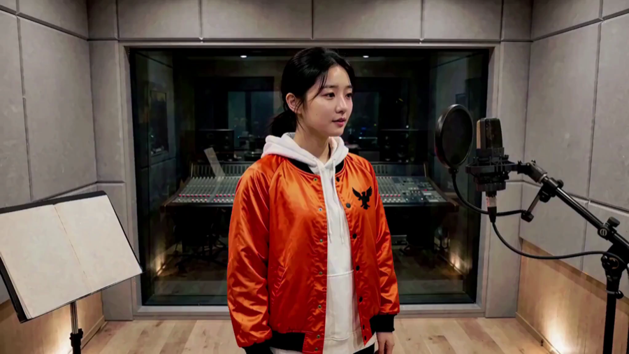
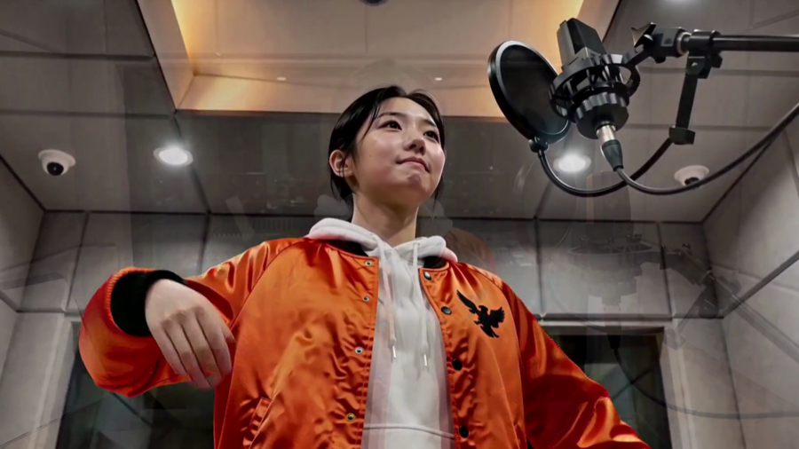
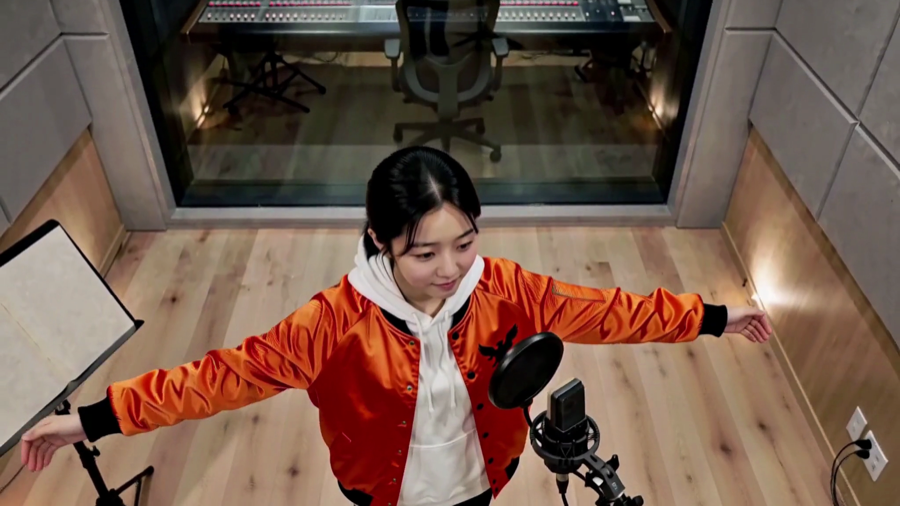
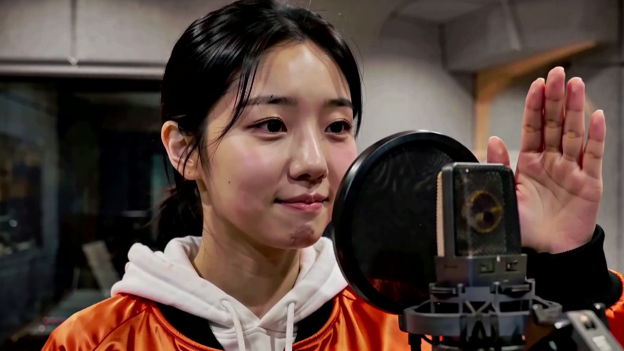
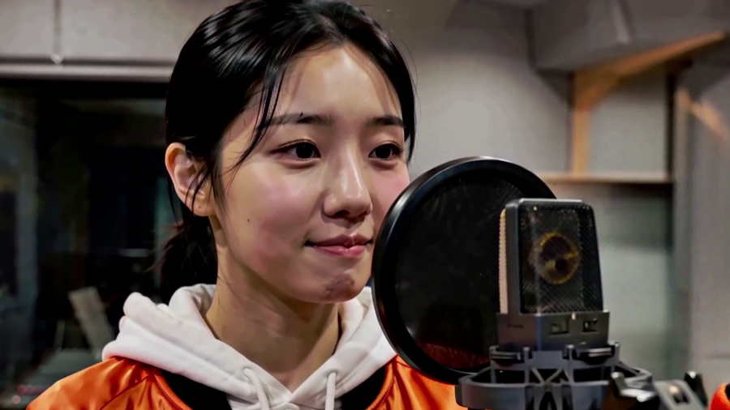
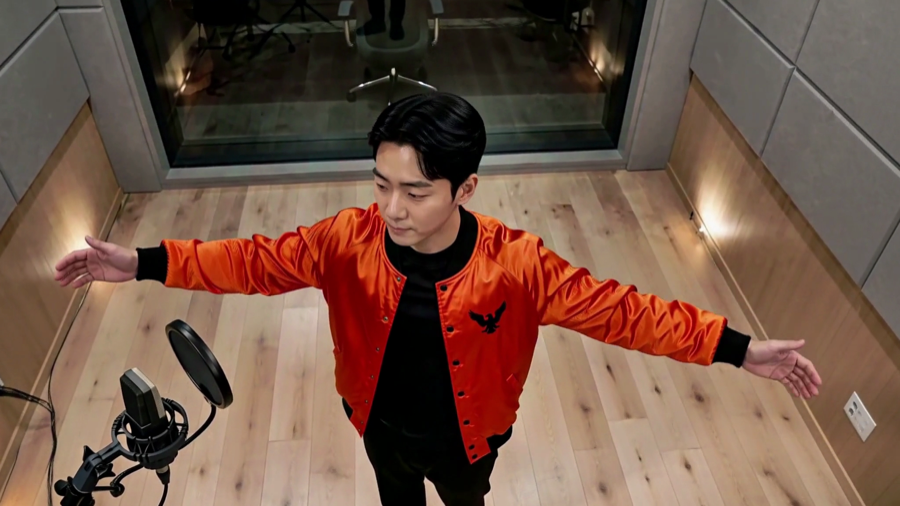
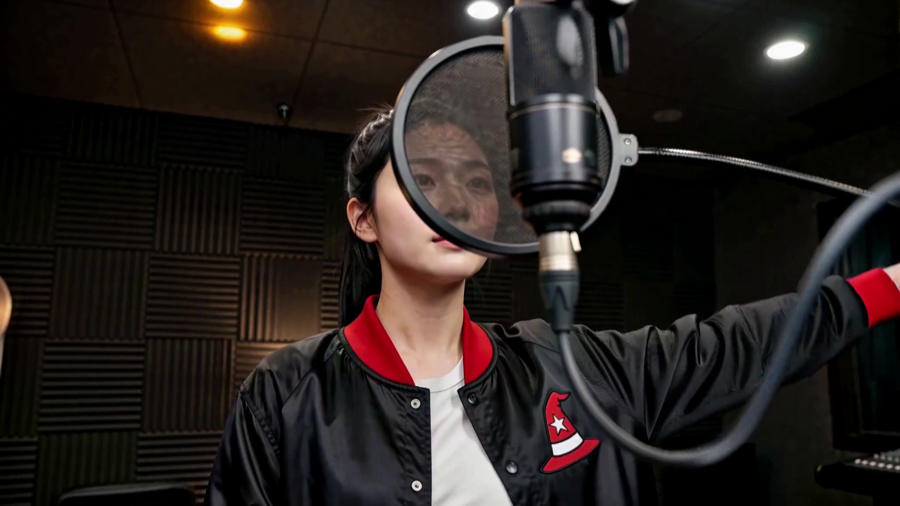
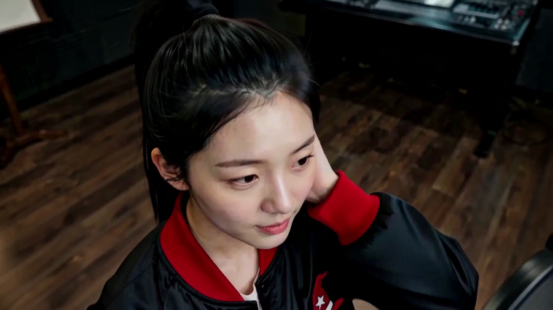
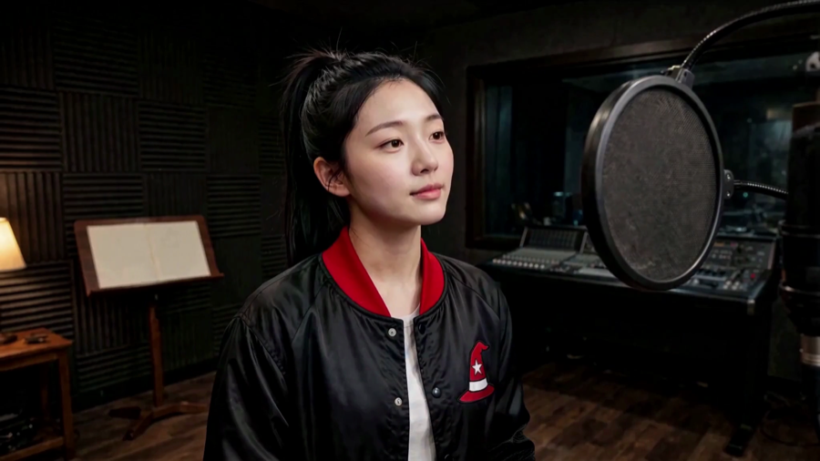
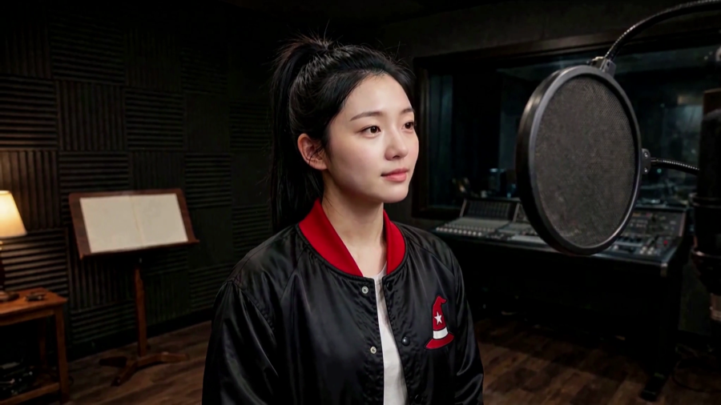

키프레임 — 제작에 쓸 것
2026-09-08 · 네 판 · 18장 · 추가 집행 $0
판마다 「참조 원판 1장 + 자가 뽑은 것」입니다. 원판이 이미 차지한 각도는 추출에서 뺐습니다 —
같은 그림을 두 번 세지 않으려고요.
- 눈 감음·얼굴 가림·프레임 잘림은 걸러 냈습니다
- 서로 1.5초 이상 떨어지고, 샷 크기·몸 방향 조합이 겹치지 않게 골랐습니다
⚠️ 아직 축 하나가 비어 있습니다 — 「팔」
자세를 재는 모델(
🔒 이 둘을 고치면 판마다 6장이 안정적으로 나옵니다.
pose_landmarker.task · 9MB)이 레포에 없어
팔이 어떻게 벌어졌는지를 못 잽니다. 그래서 T15 남자가 3장에서 멈췄습니다 —
좋은 장이 없어서가 아니라 축이 모자라 조합이 덜 생겨서입니다.
그리고 카메라 «높이» 판정도 문턱이 고정값이라 방 밝기에 쏠립니다.
🔒 이 둘을 고치면 판마다 6장이 안정적으로 나옵니다.
T11 한화 · 여자6장

이 판을 만든 그림

· 측면

· 3/4

· 3/4

· 3/4

· 3/4
T11 한화 · 남자4장
이 판을 만든 그림

· 3/4

· 정면

· 3/4
T15 · 남자3장
이 판을 만든 그림
· 3/4
· 정면
T18 · 여자5장

이 판을 만든 그림

· 정면

· 3/4

· 3/4

· 3/4
이대로 제작에 들어갑니다. 대표님 지시 — «지금 영상들은 현재상태의 추출기로 뽑아서 제작 시작».
보시고 빼실 번호가 있으면 말씀만 주십시오. 없으면 이대로 컷 참조로 겁니다.